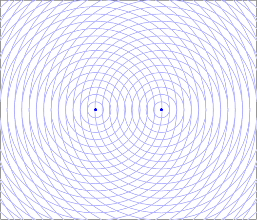

Interference of spherical waves
Two waves with the same frequency and phase (coherent)
The circles (wave fronts) represent the points where the wave function takes its minimum value. In between two circles the function takes its maximum value.

At the points in red there is constructive interference: the two wave functions have the same value (maximum or minimum). The result is a wave with an amplitude twice bigger.
At the points in balck there is destructive interference: the two wave funcitons have opposite values giving a null result.
The points where there is constructive or destructive interference reamin fixed.
At the points of constructive interference, the difference between the distatnces to the two sources is an integer multiple (n) of the wave length. In this particular case n = -9, -8, ..., 0, 1, ..., 9 and to each value of n corresponds one of the red curves.
In the points where there is destructive interference, the difference between the distances to the two sources is a half-integer (m) times the wavelength. In this particular case m = -17/2, -15/2, ..., -1/2, 1/2, ..., 17/2 and to each value of m corresponds one of the black curves.